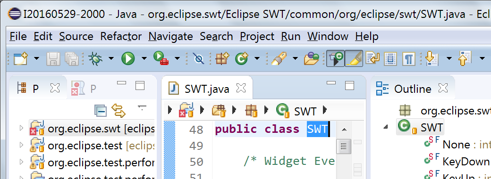
For comparison, here's how it looked in Mars without high-DPI support:
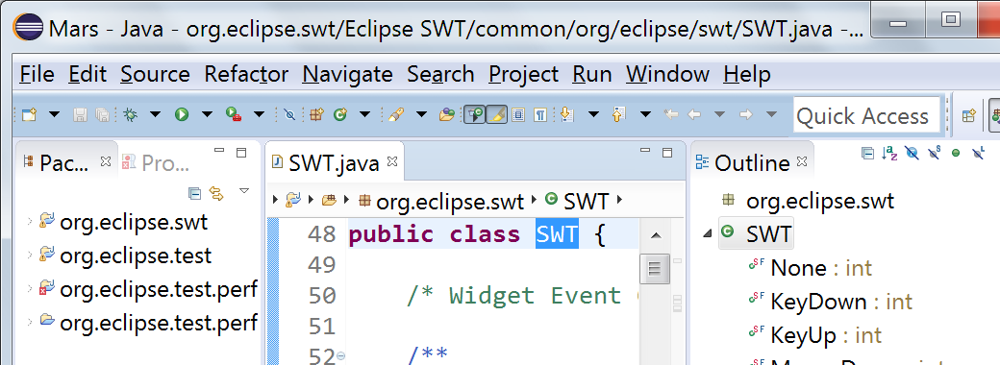
To tweak the default settings, see Tweaking SWT's auto-scaling.
SWT programmers, see APIs for high-DPI monitor support.
Icon designers and product owners, see High-DPI icons using "@2x" convention.

By default, text editors are opened with word wrap disabled.
Like a change in the General > Appearance > Colors and Fonts preference page, the commands persistently change the font size in all editors of the same type. If the editor type's font is configured to use a default font, then that default font will be zoomed.
To reset the original font size, rotate two fingers by at least 45°, or close and reopen the editor (Navigate > Back).
Those gestures only affect the current editor. Changes are neither propagated to other editors nor persisted.
Note: SWT currently only supports these gestures on OS X and on Windows systems that use the native multi-touch support. Touchpads that emulate mouse move/scroll events don't support gestures. Gesture support on GTK is not implemented yet.

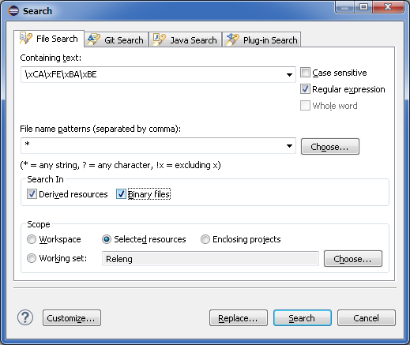
By default, the option is disabled, and matches are only reported in files that have the Text content type, or in files that have no content type and don't contain the null character (\u0000).The behavior not selected on the preference page can also be activated on-demand by holding the Shift key while launching the configuration from history.
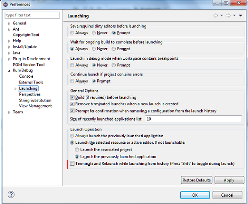
Hint: You can still open the dialog to edit a launch configuration by holding the Ctrl key while selecting the configuration from history.
You can remove existing entries via the context menu.
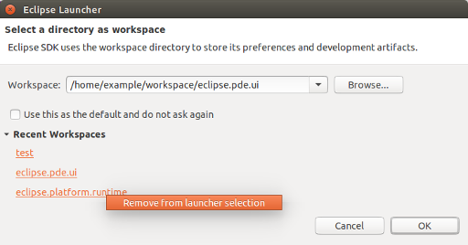
The name can be changed or cleared in Preferences > General > Workspace.
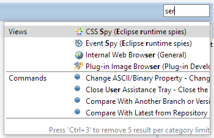
You can now restrict the search to Views, Commands, etc. by typing the category name followed by a colon.
For example, to filter the list of all the views, start typing "Views: " in the search-box.
A few usability bugs have been fixed: The tooltip shows the keyboard shortcut, the number of search results per category is independent of the size of the proposals window, and the list with previous choices already opens when you click the field with the mouse.
New default:
Old default:
When Full Screen is activated, you'll see a dialog which tells you how to turn it off again.
On the Mac, Window > Toggle Full Screen (Control+Command+F) still works as before.
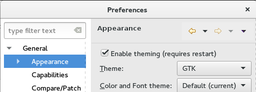
- System Editor; if none: Text Editor (default) will open the system editor associated with the file, if available. If no system editor is associated with the given file, fall back to the Eclipse Text Editor
- Text Editor will always open Eclipse's Text Editor on unassociated file types
- Ask via pop-up will open the same dialog as using Open With > Other... on a file and let you choose which editor to use (inside or outside the IDE)
Keep in mind that in any case, it's possible to assign an editor for an unassociated file type either via this same preference page, or via the Open With > Other... context-menu on the file.
The implementation comes with a new extension-point org.eclipse.ui.ide.unknownEditorStrategy
that allows external contributions of additional strategies.
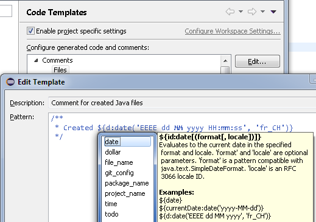
Compared to other ways to import or create projects, this wizard aims at being a universal wizard that, from a source directory or archive, can detect and configure various kinds of projects.
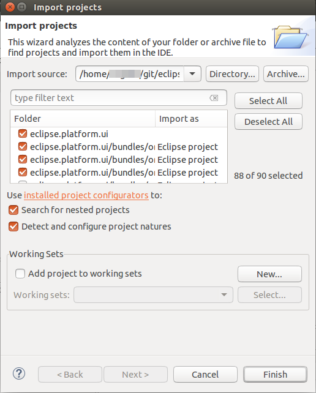
This wizard relies on an extensible set of strategies that look at the content of the import source to detect file types, project layout patterns, or even look into some files in order to deduct which folders should be turned into projects and how those should be configured. Configuration usually involves setting up project natures and preferences.
The import strategies are contributed via the new extension point org.eclipse.ui.ide.projectConfigurator, so that other IDE components
can contribute detection and configuration specific to the technology they're supporting.
WorkingSetConfigurationBlock:
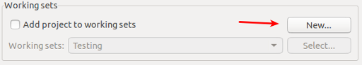
This saves quite a few clicks when creating new Working Sets.
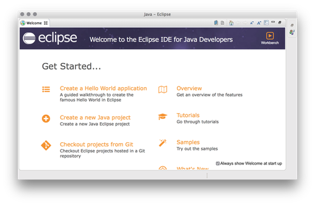
Old styling:
New toolbar styling:
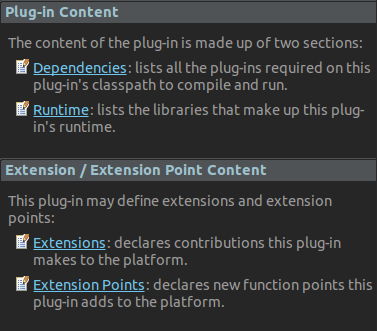
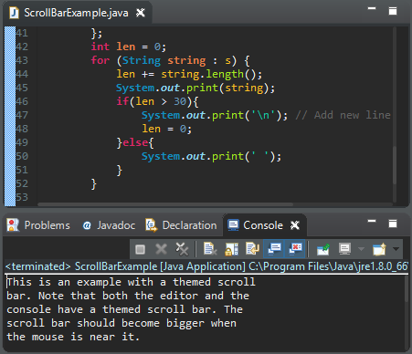
This feature can be disabled in the Windows dark theme by setting the swt.enable.themedScrollBar
VM argument to false (or enabled on the dark theme for other platforms by setting it to true)
in eclipse.ini or on the command line after -vmargs:
-Dswt.enable.themedScrollBar=false
Note that it may be added through css to any theme (see
properties available for customization and a css example)
-- the user may always override the theme setting by using the swt.enable.themedScrollBar VM argument.
Caveats: We're aware that the themed scroll bar is not currently available for all elements (such as trees and tables), and some places where the scroll bar was invisible (such as compare editors) may now show a scroll bar. These will only be fixed for Eclipse 4.7.
Padding: By default, SWT menus now look similar to those in OS X: Text is not strictly aligned. This is due to a new way in which menus are constructed in GTK3 (see https://wiki.gnome.org/HowDoI/GMenu#Icons for more details). In order to align all text entries in a menu, simply launch the SWT application with the environment variable SWT_PADDED_MENU_ITEMS=1.
Checkboxes and images: On GTK2.x, a menu entry was limited to either a checkbox or an image. On GTK3, SWT now supports menu entries that contain both an image and a checkbox.
The image below shows a screenshot of the default GTK3 menu on the left, compared to an aligned GTK3 menu on the right.
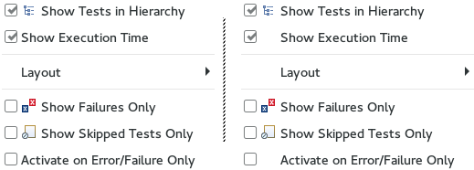
On GTK, the standard way to configure scaling for a single application is to set the
GDK_DPI_SCALE environment variable before launching an application.
E.g. to set the scale factor to 150% on the command line when launching Eclipse:
$ GDK_DPI_SCALE=1.5 ./eclipse
On Windows and GTK, SWT's auto-scaling can be configured using the swt.autoScale
Java property. E.g. to disable auto-scaling and make the application behave like on Mars (4.5),
add this VM argument in eclipse.ini or on the command line after -vmargs:
-Dswt.autoScale=false
And here are all the swt.autoScale arguments that are currently implemented:
false: scale factor is set to 100% (no scaling)integer: scale factor depends on the current display resolution, but only uses integer multiples of 100%. The detected native zoom is generally rounded down (e.g. at 150%, will use 100%), unless close to the next integer multiple (currently at 175%, will use 200%).quarter: scale factor depends on the current display resolution, but only uses integer multiples of 25%. The detected native zoom is rounded to the closest permissible value. (This used to be the default in the last two pre-release milestones.)exact: scale factor is set to the native zoom (with 1% as minimal step).- <value>: scale factor uses the given integer value in percent as zoom level.
The current default is "integer". Note that non-integer scale factors exhibit various problems like jagged borders or even completely missing images.
The scaling method can be configured by setting the swt.autoScale.method system property to:
nearest: nearest-neighbor interpolation, may look jaggedsmooth: smooth edges, may look blurry
The current default is to use "nearest", except on GTK when the deviceZoom is not an integer multiple of 100%. The smooth strategy currently doesn't work on Windows and Mac OS X.
Auto-scaling cannot be disabled on the Mac as it is provided by the OS.
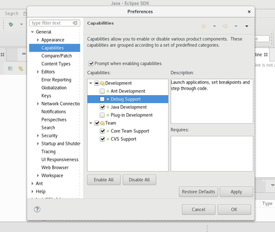
Since this dialog has API to prevent advanced editing, if the property ALLOW_ADVANCED is set to false, the original list is maintained and will be shown, which allows you to enable/disable only the main categories (not individual capabilities).
Previously, launching Eclipse on Wayland was possible only if not using the native launcher due to a bug that would cause the workspace launcher to hang and eventually crash. This has now been fixed, allowing Eclipse to launch on Wayland just as it would on X11.
These builds are instead being replaced by the corresponding 64-bit builds. The 64-bit build for Solaris x86 is already available in M7 and the 64-bit SPARC build will be available soon.
${user.home}/.eclipse/eclipse.uuid.
The UUID is automatically added to the user agent on requests made to eclipse.org servers, including requests made by p2 during Install/Update operations.
If you do not want to include the UUID in those requests, you can edit the eclipse.uuid file and set eclipse.uuid=0.